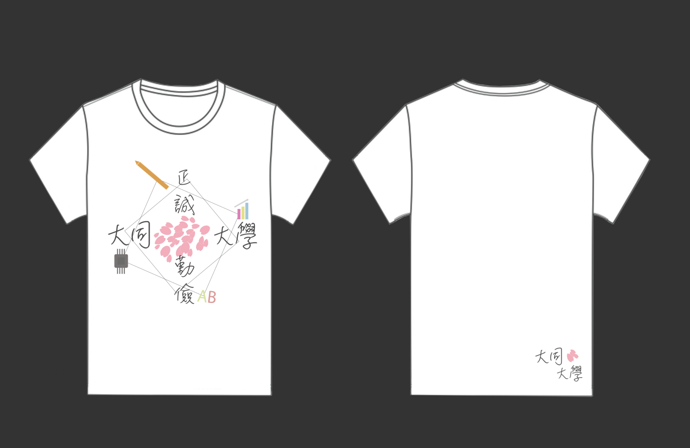

每到畢業季，大同大學會為當屆畢業生種植櫻花樹，期望畢業生未來回到學校彷彿見到當初離開學校的自己，從幼苗成長到能夠成獨當一面，因此使用櫻花花瓣為主視覺，跳脫「大同」給人大同電鍋、大同寶寶的印象。而四方型邊角分別代表大同大學四大學院工程學院、設計學院、經營學院、國際學院，祝福校內每位畢業生都能夠展翅高飛。
Every graduation season, Tatung University will plant cherry blossom trees for the current graduates. It is hoped that the graduates will return to school in the future as if they will see themselves when they left the school. They will grow from seedlings to become independent. Therefore, using cherry blossom petals as the main visual.Jumpping out of "Tatung" gives the impression of Datong electric cooker and Datong baby.The square-shaped corners represent the Engineering College, Design College, Management College, and International College of the four major colleges of Datong University. I wish every graduate in the school can fly high.
